LOTTERMANN AND FUENTESPing Pong, Albrecht Fuchs "Twin Brothers, Wellington 2009", 2009
LOTTERMANN AND FUENTESPing Pong, Ali Emir Tapan "Untitled", 2021
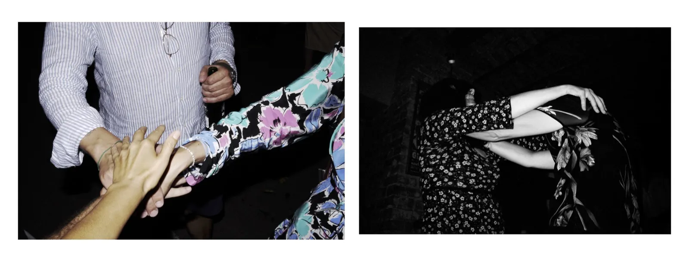
LOTTERMANN AND FUENTESPing Pong, Ali Taptık "It's not fair' series (Untitled) ", 2014
LOTTERMANN AND FUENTESPing Pong, Andreas Wellnitz
LOTTERMANN AND FUENTESPing Pong, Arslan Sükan "Untitled 7", 2010
LOTTERMANN AND FUENTESPing Pong, Berk Kır "Kendilik Yemeği", 2021
LOTTERMANN AND FUENTESPing Pong, Bulatagramm "AU REVOIR", 2022
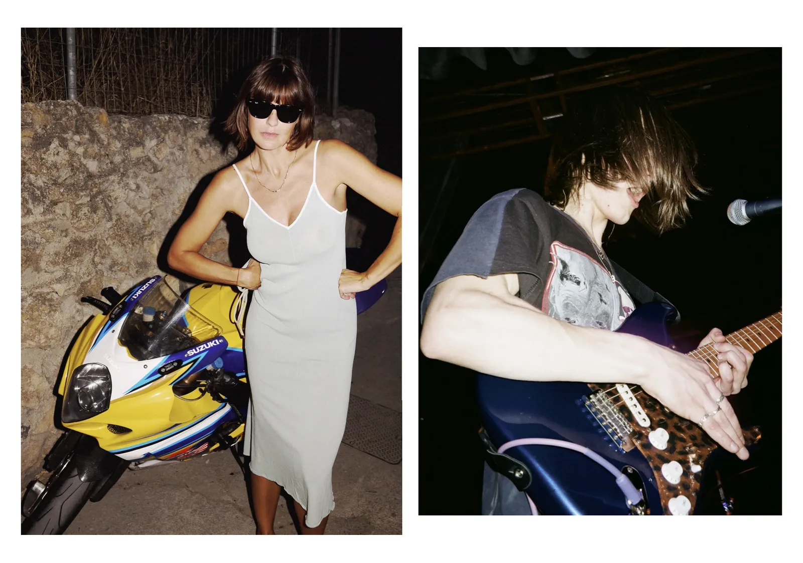
LOTTERMANN AND FUENTESPing Pong, Bulatagramm "It was like die and go to heaven", 2021
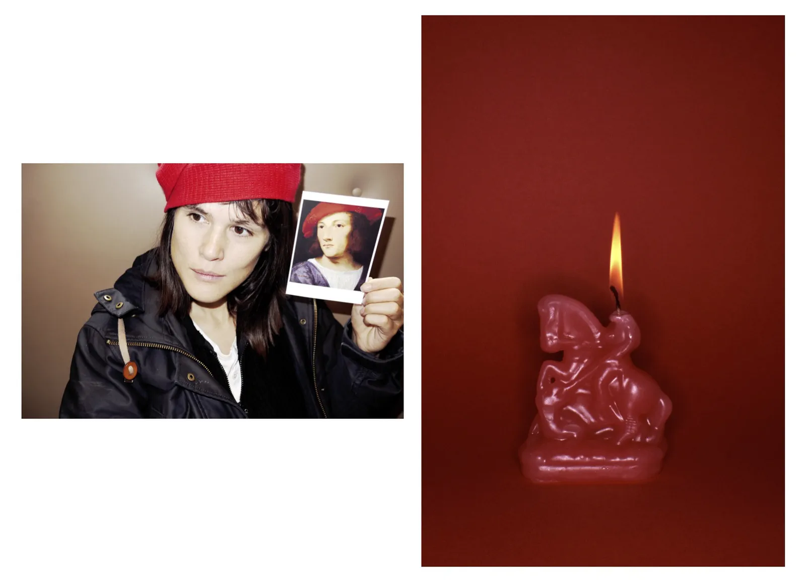
LOTTERMANN AND FUENTESPing Pong, Camille Vivier "Le Cavalier", 2014
LOTTERMANN AND FUENTESPing Pong, Claire Cottrell "Ginger", 2013
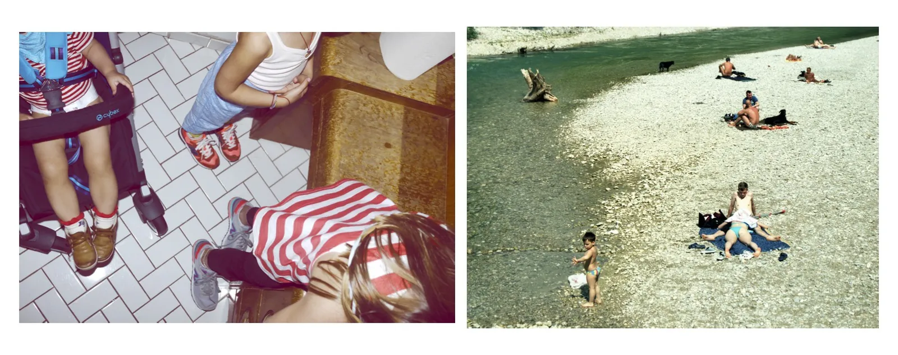
LOTTERMANN AND FUENTESPing Pong, Daniel Josefsohn "Neulich an der Isar"
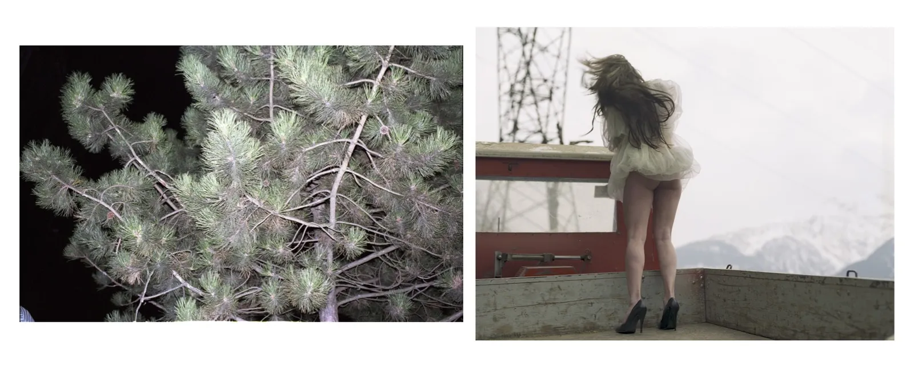
LOTTERMANN AND FUENTESPing Pong, Elfie Semotan "Weekend", 2014
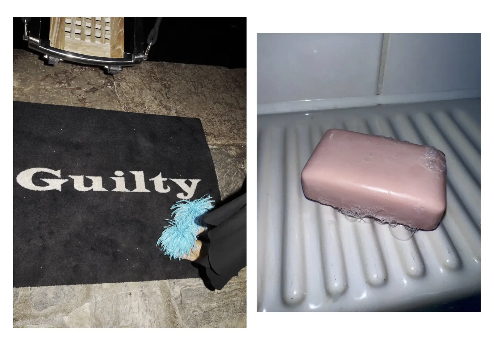
LOTTERMANN AND FUENTESPing Pong, Esra Gülmen "Guilt", 2023
LOTTERMANN AND FUENTESPing Pong, Frank Griebe "Hologram"
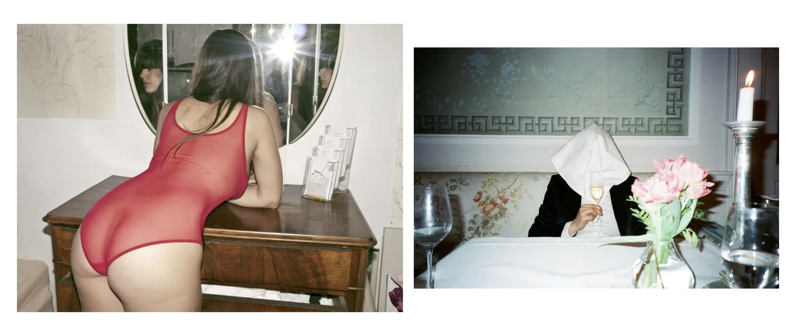
LOTTERMANN AND FUENTESPing Pong, Frank Seidlitz "Hologram", 2013
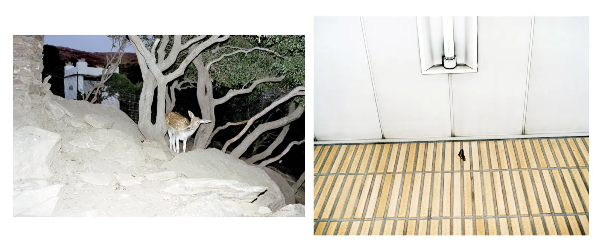
LOTTERMANN AND FUENTESPing Pong, Frederike Helwig "Tokyo", 2001
LOTTERMANN AND FUENTESPing Pong, Juergen Teller "WILDSCHWEINMUTTER", 2014
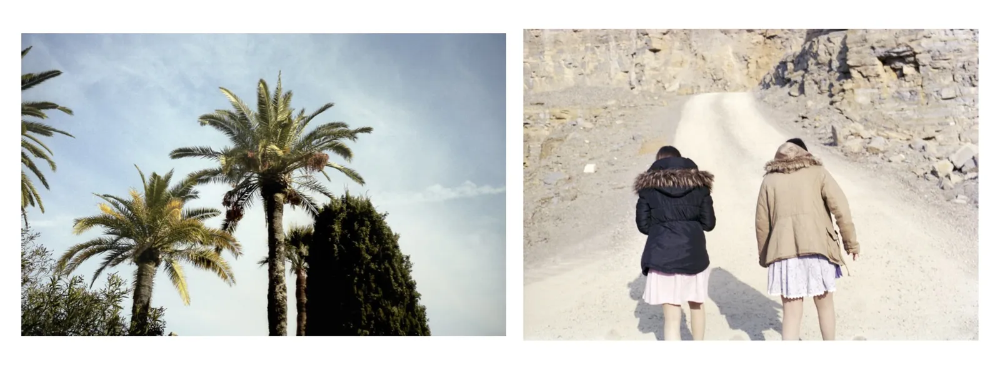
LOTTERMANN AND FUENTESPing Pong, Kristin Loschert "Girls", 2013
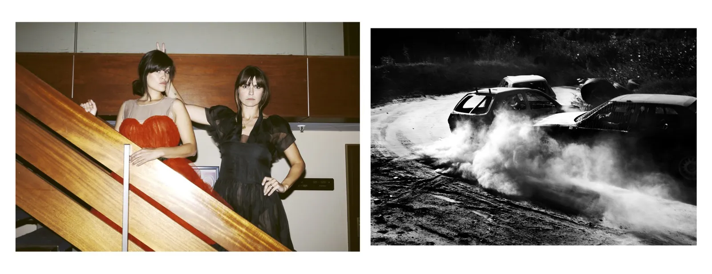
LOTTERMANN AND FUENTESPing Pong, Markus Jans, 2013
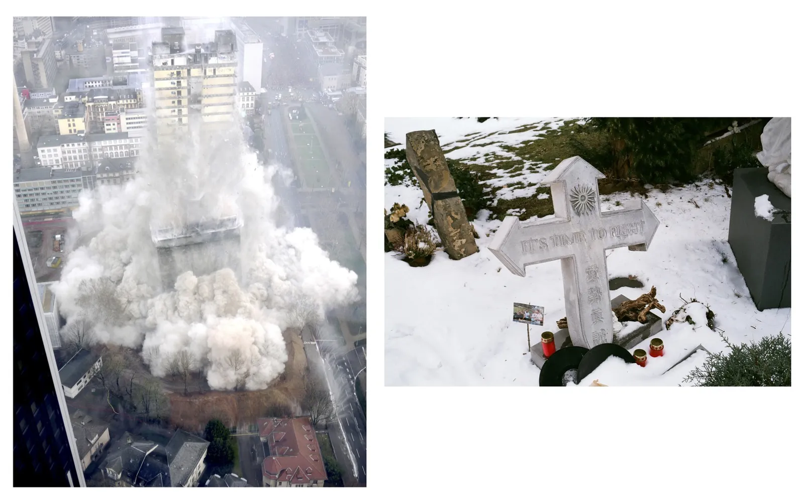
LOTTERMANN AND FUENTESPing Pong, Maxime Ballesteros "It's Time to Fight", 2014
LOTTERMANN AND FUENTESPing Pong, Nadine Fraczkowski "Plumage", 2013
LOTTERMANN AND FUENTESPing Pong, Okan Bayülgen "Erkeklerin saatini takan kadınlar", 2008
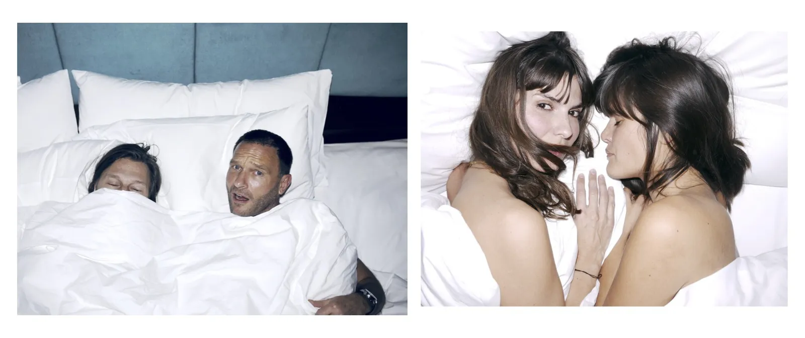
LOTTERMANN AND FUENTESPing Pong, Olaf Heine and Thomas Kretschmann, 2014
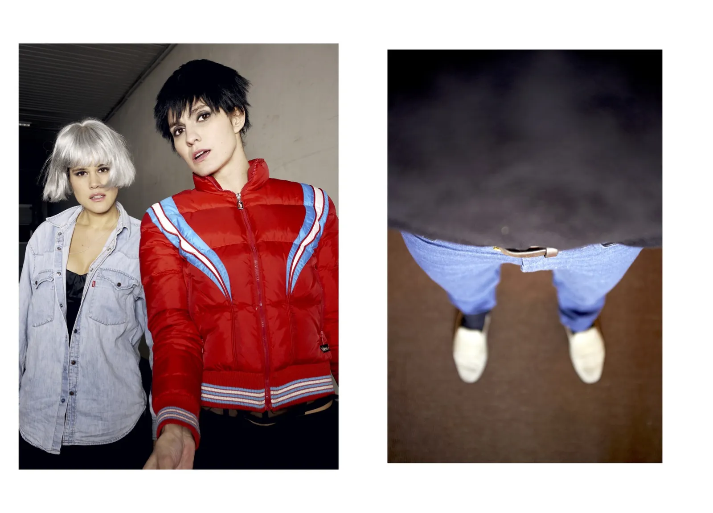
LOTTERMANN AND FUENTESPing Pong, Peter Langer "O.T.", 2014
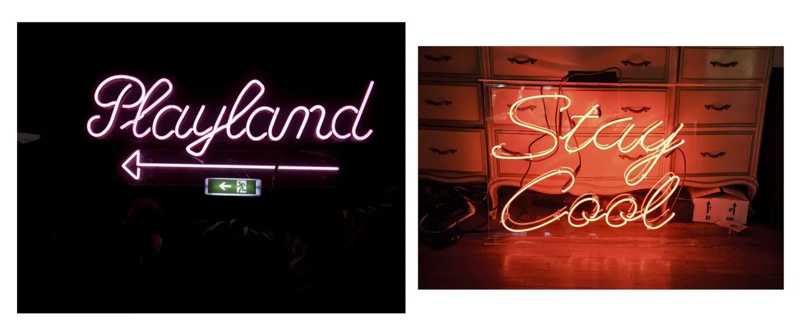
LOTTERMANN AND FUENTESPing Pong, RJ Shaughnessy "Stay Cool Neon Sign", 2011
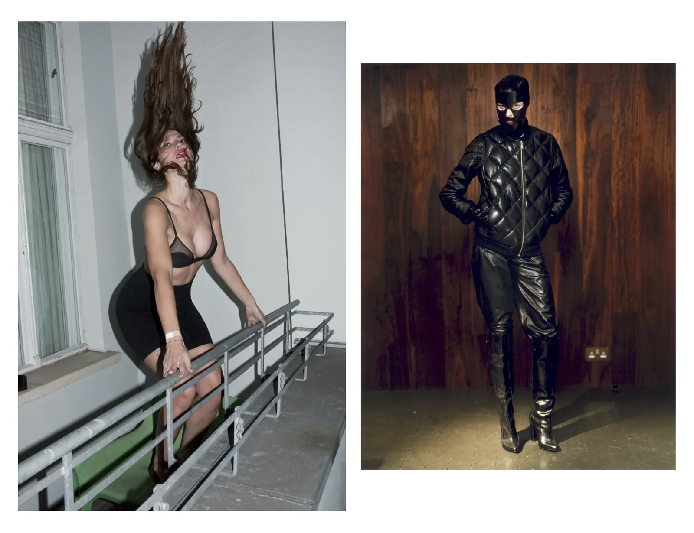
LOTTERMANN AND FUENTESPing Pong, Robi Rodriguez
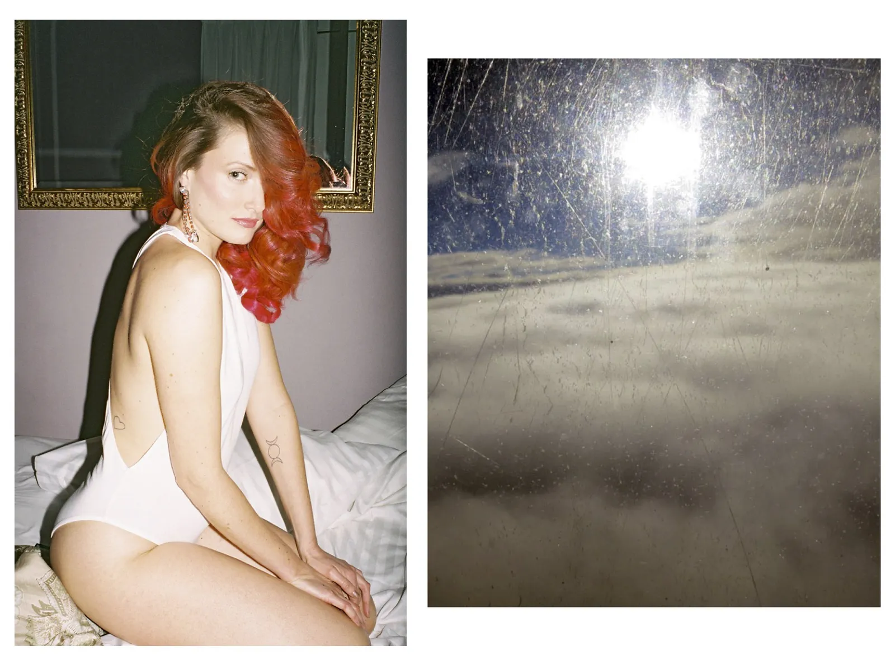
LOTTERMANN AND FUENTESPing Pong, Roger Deckker "Window", 2014
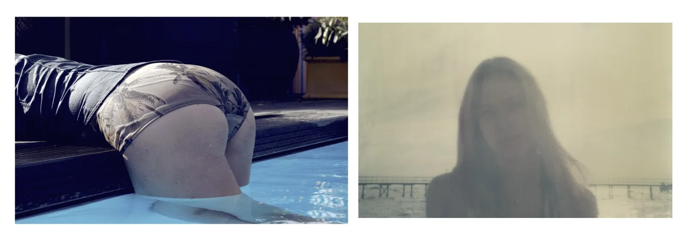
LOTTERMANN AND FUENTESPing Pong, Roger Eberhard "J", 2010
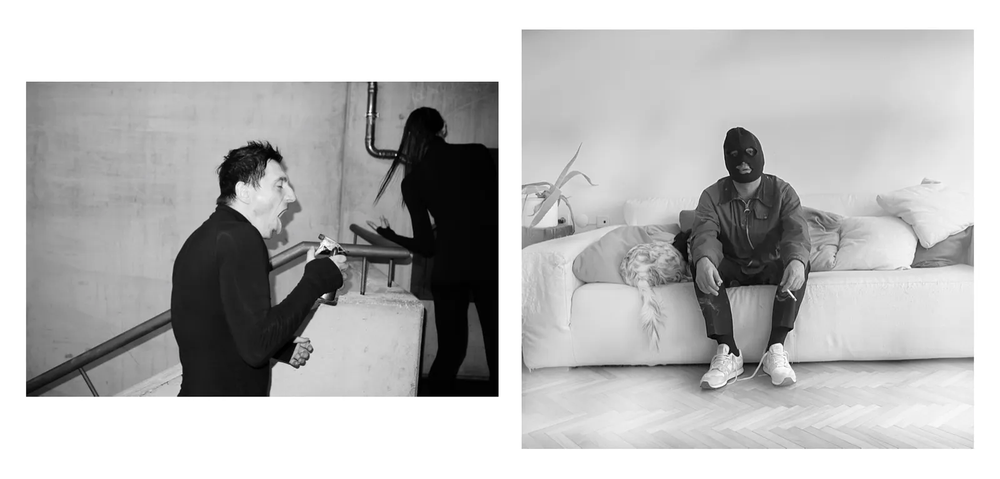
LOTTERMANN AND FUENTESPing Pong, Tarık Töre, 2023
LOTTERMANN AND FUENTESPing Pong, Timurtaş Onan "A woman with all her emotions", 2014
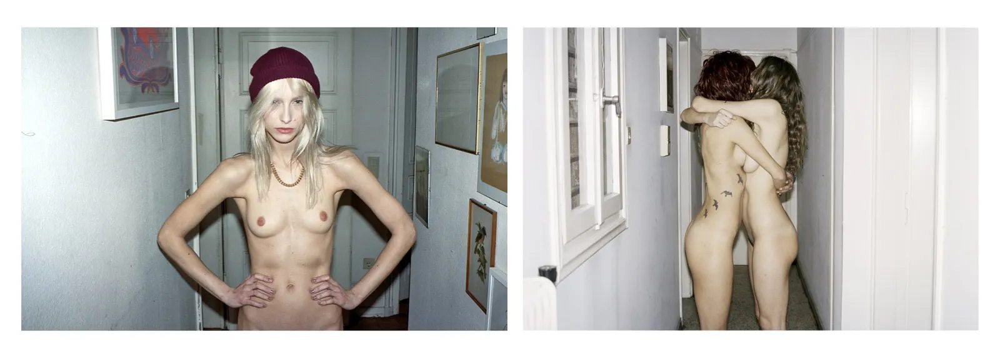
LOTTERMANN AND FUENTESPing Pong, Yiorgos Mavropoulos "PONG ATHENS", 2014